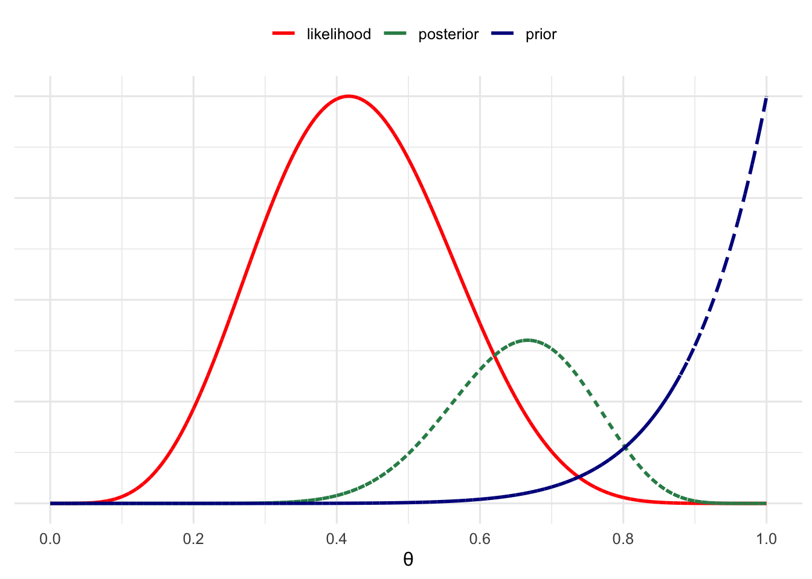
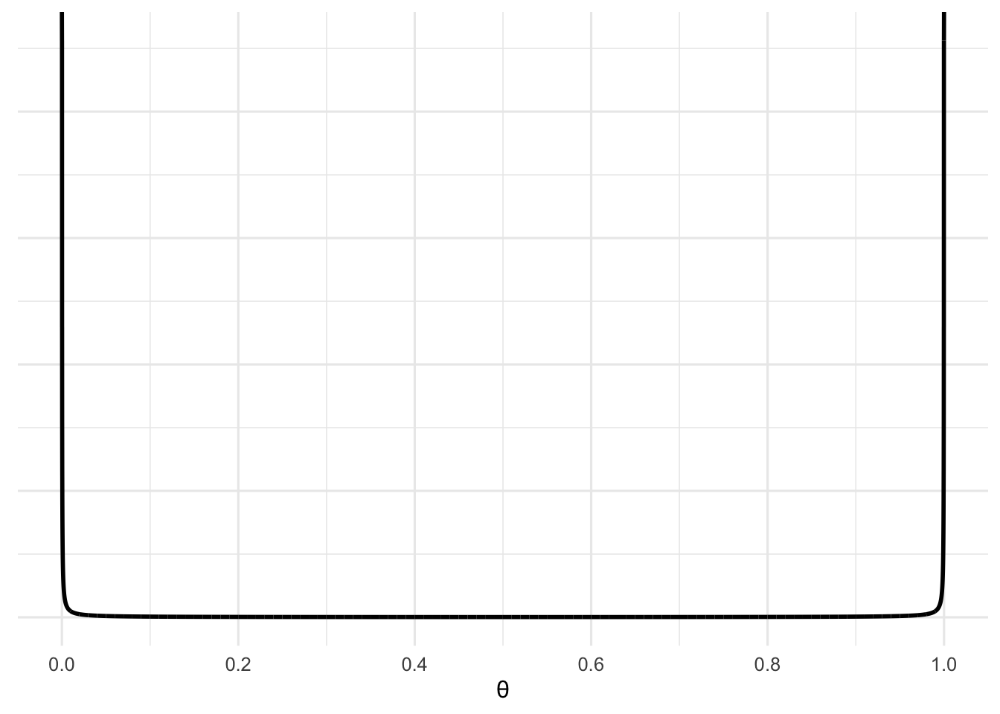
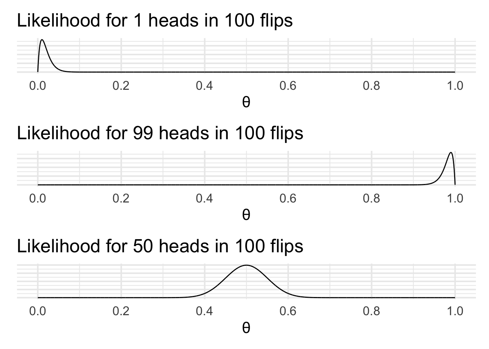
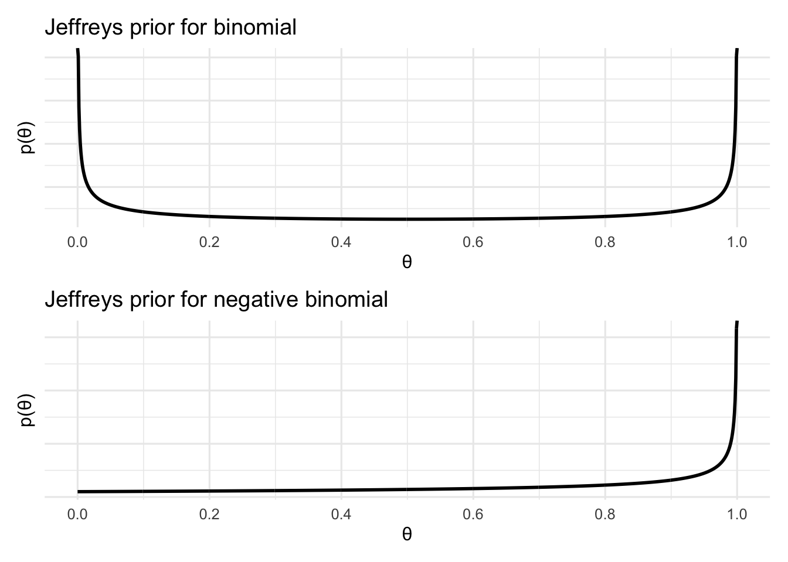

Chapter 5 Choosing priors Part I
We’re going to cover priors in two parts. In this part, we’re going to cover some general implications of different prior choices and we’re going to talk about priors specifically in the context of Bayes factor. In Part II, we cover prior choice in the context of Bayesian estimation. The reasons for making particular choices and the implications of our choices in these two contexts are a little different, so it’s best to deal with them separately.
5.1 Priors with specific mathematical properties
The first prior choice strategy we’ll cover is choosing priors that have particular mathematical properties. One property we might be interested in is choosing priors that are from the same family as the posterior. When we do this, the prior is known as a conjugate prior.
Ordinarily there aren’t closed form solutions for calculating posteriors. However, the beauty of using a conjugate prior is that this allows us to derive a closed form solution for the posterior. One example of a conjugate prior is the Beta distribution, which is a conjugate prior when we have a Binomial or Negative binomial likelihood (like our coin flip example). The resulting posterior would then take the form of a Beta distribution.
# 1
# Set the observation
# This takes two parameters
# X: The number of heads
# N: The number of flips
X = 5
N = 12
# set the prior
# We'll use a Beta distribution as our prior
# The beta distribution takes two parameters (α [alpha_prior] and β [beta_prior])
alpha_prior = 10
beta_prior = 1
# define a function for the likelihood
like_func = function(theta, x,n){
dbinom(x = x, size = n, prob = theta)}
# create a tibble to hold the plot data
like_df = tibble(theta = seq(0,1,.0001)) %>%
mutate(density = map_dbl(theta, function(x) like_func(theta = x, X, N)))
# define a function for the prior
prior_func = function(theta, alpha_prior,beta_prior){
dbeta(x = theta, shape1 = alpha_prior, shape2 = beta_prior)}
# create a tibble to hold the plot data
prior_df = tibble(theta = seq(0,1,.0001)) %>%
mutate(density = map_dbl(theta, function(x) prior_func(theta = x, alpha_prior, beta_prior)))
# define a function for the posterior
posterior_func = function(theta, X, N, alpha_prior, beta_prior){
dbeta(x = theta, shape1 = alpha_prior + X, shape2 = beta_prior + N - X)
}
# create a tibble to hold the plot data
posterior_df = tibble(theta = seq(0,1,.0001)) %>%
mutate(density = map_dbl(theta, function(x) posterior_func(theta = x, X, N, alpha_prior, beta_prior)))
like_df$density = like_df$density * (max(prior_df$density)/max(like_df$density))
combined_df = prior_df %>% full_join(posterior_df, by = "theta") %>% full_join(like_df, by = "theta") %>%
set_colnames(c("theta","prior","posterior","likelihood")) %>%
pivot_longer(cols = c("prior","posterior","likelihood"), names_to = "type", values_to = "density")
ggplot(combined_df, aes(x = theta, y = density, colour = type, linetype = type)) + geom_line(size = 1, na.rm = T) +
scale_colour_manual(values = c(posterior = "seagreen", prior = "darkblue", likelihood = "red"),
name = NULL) +
scale_linetype(guide = "none") + scale_y_continuous(name = NULL, labels = NULL) +
scale_x_continuous(name = "θ", breaks = seq(0,1,.2)) + theme_minimal(12) + theme(legend.position = "top")
5.2 Priors that reflect ignorance
The next thing that we might want to take into account when choosing a prior is choosing a prior that doesn’t commit us to any particular value of the parameter. But doing this might not be as straightforward as it initially seems. We might think that we can just weight each possible value of the parameter equally. However, it turns out that this isn’t always the best strategy. To see why, we’ll turn to an example.
For our coin flipping example we can calculate the maximum likelihood estimate for the coin bias given our data. The formula for this is given as:
\[\hat{\theta}_{\mathrm{mle}}=\frac{x}{n},\]
where \(x\) is the number of heads in \(n\) flips. This value is the same as the mean of our likelihood. We can think of this as our estimate of the parameter without taking account any prior information.
Next we can incorporate a prior and calculate a posterior. We’ll use a Beta prior, because it’ll allow us to easily calculate the posterior. For a prior of the form \(Beta(\alpha,\beta)\), the posterior for \(x\) heads in \(n\) flips is given as \(Beta(\alpha + x,\beta + n -x)\). From this, we can now work out the mean of the posterior as:
\[\hat{\theta}_{\mathrm{bayes}}=\frac{\alpha + x}{\alpha + \beta + n}.\]
From this we can see that for any value of \(\alpha > 0 < \beta\) the value of \(\hat{\theta}_{\mathrm{bayes}}\) and \(\hat{\theta}_{\mathrm{mle}}\) will be different.
This results in a rather unintuitive conclusion. The uniform prior \(Beta(1,1)\) has a bigger influence (is in a sense more informative) than the prior \(Beta(0,0)\) (this prior is called Haldane’s prior). Technically, \(Beta(0,0)\) is undefined, but we can examine the prior \(Beta(\epsilon,\epsilon)\), where \(\epsilon\) is an arbitrarily small number.
# 2
# Set the observation
# This takes two parameters
# X: The number of heads
# N: The number of flips
X = 5
N = 12
# set the prior
# We'll use a Beta distribution as our prior
# The beta distribution takes two parameters (α [alpha_prior] and β [beta_prior])
alpha_prior = 0.01
beta_prior = 0.01
glue("The mean of the likelihood is {round(X/N,2)}
The mean of the posterior is {round((alpha_prior + X)/(alpha_prior + beta_prior + N),2)}") The mean of the likelihood is 0.42
The mean of the posterior is 0.42
tibble(theta = seq(0,1,.0001)) %>%
mutate(density = map_dbl(theta, function(x) prior_func(theta = x, alpha_prior, beta_prior))) %>%
ggplot(aes(x = theta, y = density)) + geom_line(size = 1) +
scale_y_continuous(name = NULL, labels = NULL) + scale_x_continuous(name = "θ", breaks = seq(0,1,.2)) +
theme_minimal(12)
From the plot we can see that this prior splits nearly all of it’s weight on the extreme of \(\theta\) = 0 and \(\theta\) = 1. In short, a prior that seems to make the least commitments has a bigger influence than the prior that seemingly makes the strongest commitments.
If we think about it, we’ll also see that a prior like this makes a lot of sense if we want to quantify our uncertainty. To understand this, lets plot the likelihood functions for various observations. We’ll pick two extreme observations (1 head in 100 flips and 99 heads in 100 flips) and one middle of the road observation (50 heads in 100 flips). The plots will allow us to see the range of plausible values for the coin bias given the observation.
# 3
like_options = list(c(1,100),
c(99,100),
c(50,100))
list(tibble(theta = seq(0,1,.0001)) %>%
mutate(density = map_dbl(theta, function(t) like_func(theta = t, like_options[[1]][1],
n = like_options[[1]][2])),
x = like_options[[1]][1],
n = like_options[[1]][2]),
tibble(theta = seq(0,1,.0001)) %>%
mutate(density = map_dbl(theta, function(t) like_func(theta = t, like_options[[2]][1],
n = like_options[[2]][2])),
x = like_options[[2]][1],
n = like_options[[2]][2]),
tibble(theta = seq(0,1,.0001)) %>%
mutate(density = map_dbl(theta, function(t) like_func(theta = t, like_options[[3]][1],
n = like_options[[3]][2])),
x = like_options[[3]][1],
n = like_options[[3]][2])) %>%
map(function(x) ggplot(data = x, aes(x = theta, y = density)) +
geom_line() + labs(title = glue("Likelihood for {x$x} heads in {x$n} flips")) +
theme_minimal(16) + scale_x_continuous(name = "θ", breaks = seq(0,1,.2)) +
scale_y_continuous(name = NULL, labels = NULL)) %>%
patchwork::wrap_plots(ncol = 1)
Comparing the plots for the extreme observations to the plot for the middling one we can see that there’s a larger range of plausible values of the bias when the observation is somewhere near the middle of the range. When the observation is at the extreme there’s only a very narrow range of values of the bias that could plausibly produce the observation. In a sense, we’re less uncertain about the extremes and more uncertain in the middle. Quantifying this uncertainty means putting more prior mass at the extremes (where we’re certain) and less in the middle (where more uncertain about the relation between parameters and observations).
There’s also another hurdle to coming up with a prior that is “uninformative”, and this has to do with how we parametrise problems. Let’s say that I’m interested in computing a posterior estimate about the probability \(\pi\) of a coin landing heads. I use a uniform prior so that for any value of \(\theta_n\), \(p(\theta_1)=p(\theta_2)\). After working out my posterior I give you the estimate. You, however, are not interested in the probability \(\pi\). Instead, you’re interested in the log odds \(\phi\), so you transform \(\pi\) into \(\phi\) using \(\phi=\mathrm{log}\frac{\pi}{1-\pi}\).
Now let’s say another another statistician is analysing the same data, but they’ve decided to work in \(\phi\) space from the get go. So to analyse the data, they first convert it into \(\phi\), construct a prior so that for any \(\theta_n\), \(p(\theta_1)=p(\theta_2)\). They then take the data, and the prior, to compute the posterior.
It turns out that when this is done, the two estimates—the one converted from \(\pi\) to \(\phi\) and the done wholly in \(\phi\) won’t agree. That is because what is uniform for the one isn’t uniform for the other. So which way of asking the question is the right one? Do you ask about \(\pi\) or \(\phi\)? The answer is that there is, and there shouldn’t, be a right way to ask the question. If the parameters are equivalent (there’s a one to one translation from one to the other) and to use a non-informative prior then your choice of parameterisation shouldn’t inform your posterior. There is, however, a way to construct prior that will allow you to get the same answer for the two questions. This is by using Jeffreys’ rules. The resulting prior is often called a Jeffreys’ prior. For our coin flipping example, the prior constructed from the parameter space of the probability of show heads turns out to be \(Beta(\frac{1}{2},\frac{1}{2})\).
This property of Jeffreys’ priors is certainly useful. However, there’s no free lunch in statistics, and using Jeffreys’ priors involves a cost. The cost is that to construct a Jeffreys’ prior you need to take into account the universe of possible results. That is, the method of constructing Jeffrey’s priors takes into account data that only might occur. As a consequence, the Jeffreys prior for our two coin flipping example—flipping for 10 flips and flipping until 2 tails—will be different. The Jeffreys prior for \(n\) flips is \(Beta(\frac{1}{2},\frac{1}{2}\)). While the prior for the flipping until \(x\) tails is \(Beta(1,\frac{1}{2})\).
jeffrey1 = tibble(theta = seq(0,1,.001)) %>%
mutate(density = map_dbl(theta, function(x) prior_func(theta = x, .5, .5))) %>%
ggplot(aes(x = theta, y = density)) + geom_line(size = 1) +
scale_y_continuous(name = "p(θ)", labels = NULL) + scale_x_continuous(name = "θ", breaks = seq(0,1,.2)) +
theme_minimal(12) + labs(title = "Jeffreys prior for binomial")
jeffrey2 = tibble(theta = seq(0,1,.001)) %>%
mutate(density = map_dbl(theta, function(x) prior_func(theta = x, 1, .5))) %>%
ggplot(aes(x = theta, y = density)) + geom_line(size = 1) +
scale_y_continuous(name = "p(θ)", labels = NULL) + scale_x_continuous(name = "θ", breaks = seq(0,1,.2)) +
theme_minimal(12) + labs(title = "Jeffreys prior for negative binomial")
jeffrey1 / jeffrey2
5.3 Priors that reflect our beliefs about the world.
Finally, you can choose priors that reflect your beliefs about the world. In the coin flipping example, this would involve picking a prior that reflects what you believe about fair and biased coins: Do biased coins show heads more often, tails more often, extreme values more often, and so on. When we’re using Bayes factors in experimental psychology, this would me picking priors that describe our scientific theories—that is, picking priors that makes predictions about data that are consistent with the predictions about data that our theories make.
Do this is hard, but we’ll cover some strategies when we get to actually computing Bayes factors for some problems. But it’s also important to remember that you don’t need to restrict yourself to one model. You can have many models and you can see how changes in your model change your inferences. This is sometimes captured by the idea of robustness regions. However, it’s also important to note that if different reasonable priors lead to different conclusions then there might not be one answer to your problem. That is, it important to recognise that uncertainty in the nature of your models can lead to uncertainty in your conclusions.